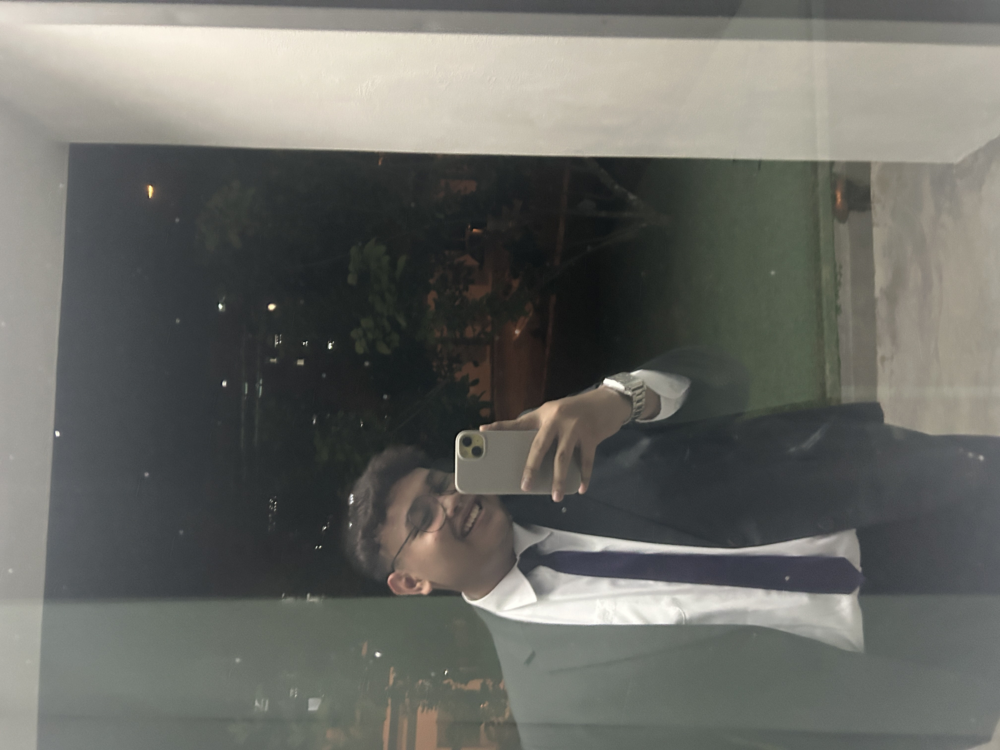
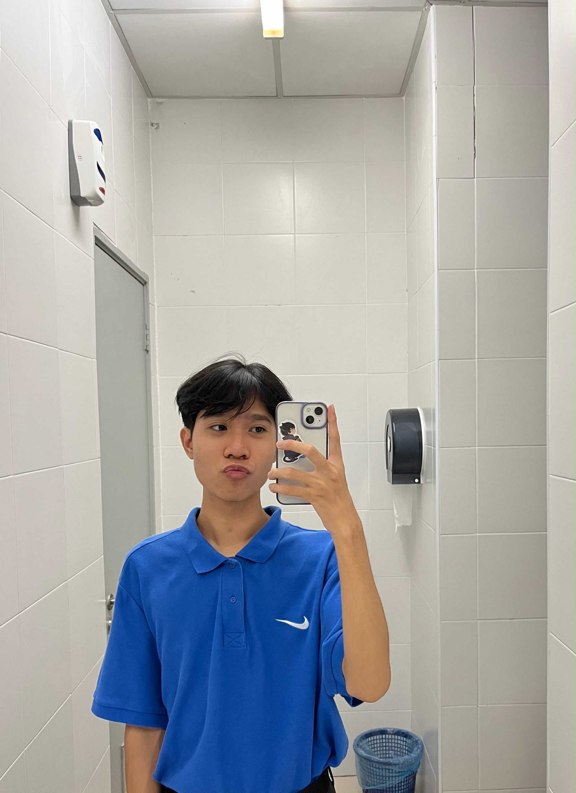
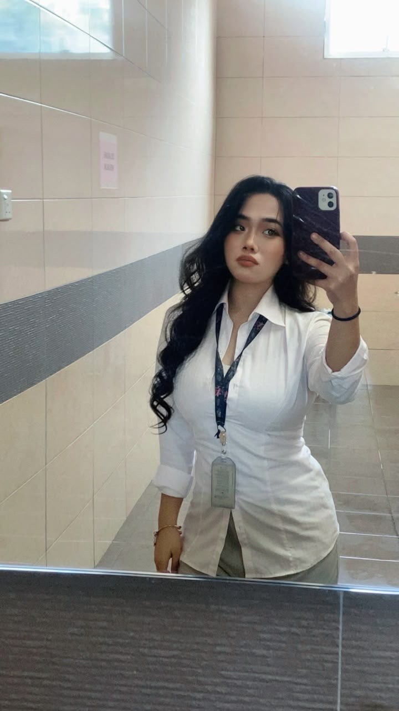
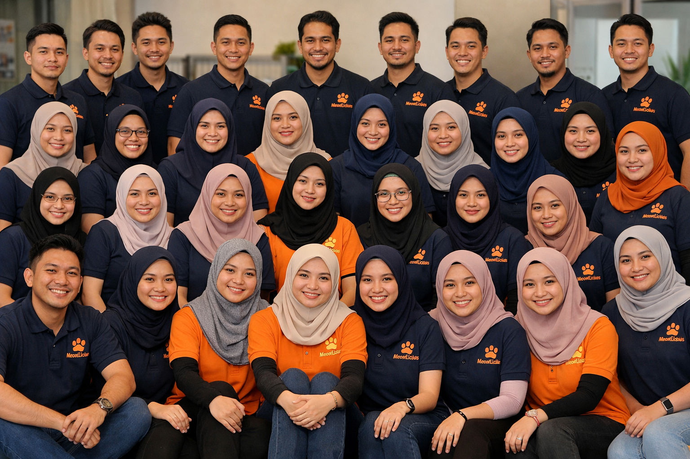

MeowLicious was founded in 2017 with a heartfelt vision: to ensure that every cat receives the nutrition they truly deserve. The inspiration came from witnessing many cats being fed without proper and balanced meals. Out of compassion for these pets, we decided to provide a brand that offers premium and nutritious cat food, helping owners care for their furry companions in the best way possible. From humble beginnings, I, together with two dedicated teammates, embarked on this journey through trial and error, learning and growing along the way. What started as a small initiative has now flourished into a trusted name among cat lovers. Today, MeowLicious proudly operates four branches alongside our headquarters in Shah Alam: Sungai Petani, Kedah (our very first branch). Muadzam, Pahang. Seremban, Negeri Sembilan. Johor Bahru, Johor. Each branch represents a milestone in our growth, driven by passion, perseverance, and the belief that every paw deserves healthy bites.With the tagline “Healthy bites, happier paws”, MeowLicious continues to expand, guided by our mission to provide cat owners across Malaysia with products that combine quality, care, and love.
To be the leading and most trusted brand in Malaysia that provides premium, nutritious, and innovative cat products, ensuring every cat enjoys a healthier and happier life while strengthening the bond between pets and their owners.
Provide an innovative, safe, and affordable premium cat products that ensure every feline receives complete nutrition and care. We are committed to supporting cat owners with trusted solutions, fostering healthier and happier lives for their pets, while continuously growing through passion, teamwork, and dedication.

Iman Hakim
Founder

Rezky Ikhwan
Co-Founder

Waheeda Sakina
Co-Founder

Workers
Family of 40 employees at MeowLicious